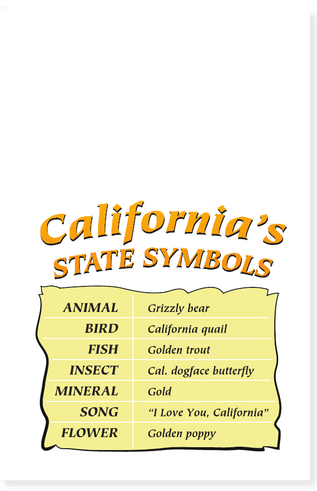

State Symbols
California has many natural resources. These are things that
come from nature. Some of the plants and animals do not
live anywhere else in the world.
There are other
symbols
of things that are special about
California. When the state wants to honor something special,
it makes that thing an official state symbol. For example, the
grizzly bear is the official state animal.
14
15
17